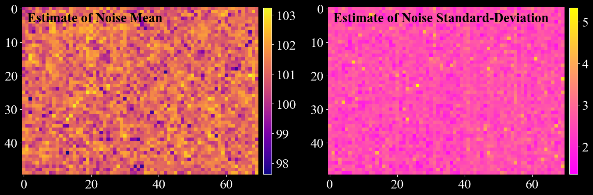
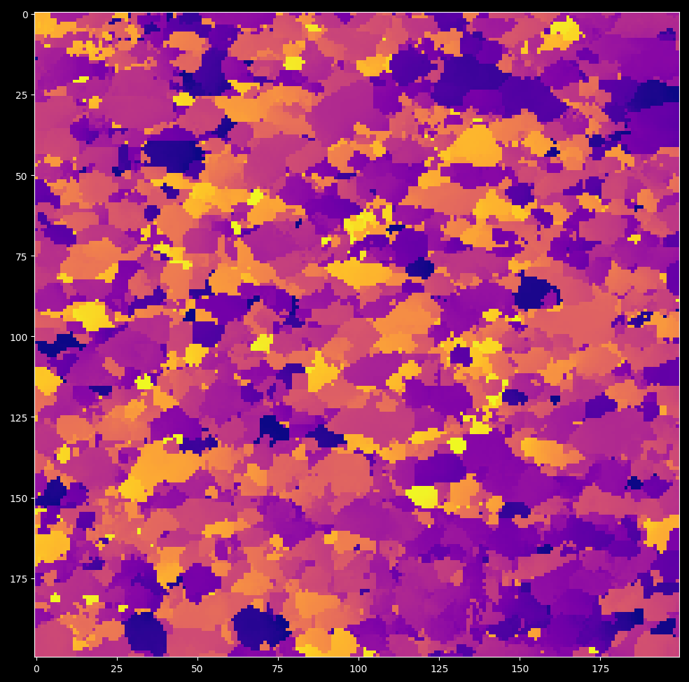
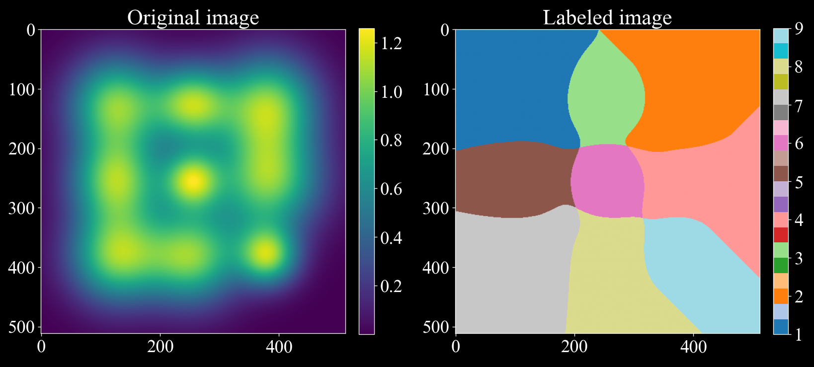
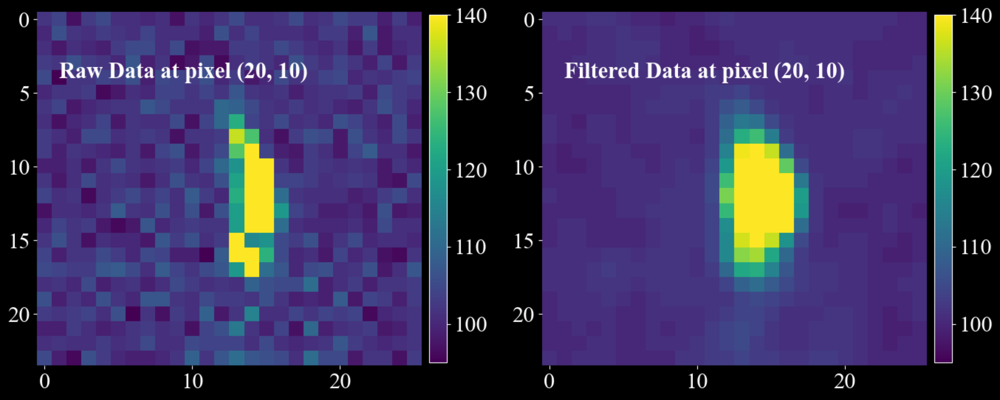
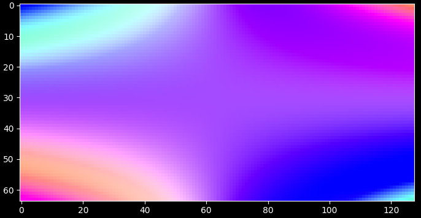
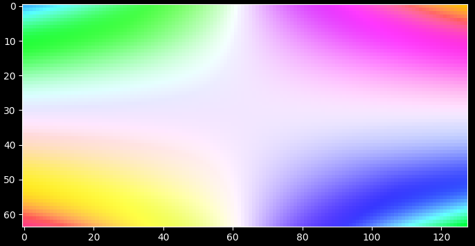
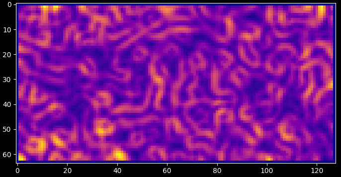

DARLING#
the python [D]ark field x-ray microscopy [A]nalysis & [R]econstruction [L]ibrary for rapid data [IN]spection & [G]raphing
Usecase#
Loading & plotting Data#
Darling collects many useful tools in the properties and transforms modules.
For example, it is possible to segment per-pixel peaks and extract features from them. Color-coding the the mean motor position of the first peak per pixel gives a mosaicity map as shown below.
import darling
# replace with your own data path
path_to_data, _, _ = darling.io.assets.domains()
dset = darling.DataSet(path_to_data, scan_id="1.1")
# segment per-pixel peaks and extract features
peakmap = darling.properties.peaks(dset.data, k=4, coordinates=dset.motors)
# color code the scan based on the first peak-maxima mean motor position
rgbmap, colorkey, colorgrid = darling.transforms.rgb(
peakmap.mean, coordinates=dset.motors
)
plt.figure()
plt.imshow(rgbmap)
plt.show()

for more examples see the externally hosted documentation at https://axelhenningsson.github.io/darling/
Installation#
From source the key is simply to clone and pip install
git clone https://github.com/AxelHenningsson/darling.git
cd darling
pip install -e .
In general, you probably want to install in a fresh virtual environment as
python3 -m venv .venv_darling
source .venv_darling/bin/activate
git clone https://github.com/AxelHenningsson/darling.git
cd darling
pip install -e .
use
source .venv_darling/bin/activate
whenever you want to activate the environment. To add your env into a jupyter kernel such that you can use it in an interactive notebook you may add the following two commands:
pip install ipykernel
python -m ipykernel install --user --name=darling
Note on jupyter & the ESRF slurm cluster#
In the main ESRF slurm Python jupyter kernel it is possible to do the following hack to get the latest darling running.
git clone https://github.com/AxelHenningsson/darling.git
sys.path.insert(0, os.path.abspath('./darling'))
import darling
This trick is possible since that all dependencies of darling are already installed in the big Python jupyter kernel at ESRF.
The following snippet has also been verified to work on the ESRF slurm cluster 19 Dec 2024 in a browser terminal:
python3 -m venv .venv_darling
source .venv_darling/bin/activate
git clone https://github.com/AxelHenningsson/darling.git
cd darling
pip install -e .
pip install ipykernel
python -m ipykernel install --user --name=darling
This appraoch should work on other clusters as well, as long as some user permission to install exists.
Documentation#
Darling hosts documentation at https://axelhenningsson.github.io/darling/
DataSet#
A DFXM data-set.
This is the master data class of darling. Given a data source the DataSet class will read data from arbitrary layers, process, threshold, compute moments, visualize results, and compile 3D feature maps.
- param data_source (:
obj: string or darling.io.reader.Reader): A string to the absolute h5 file path location of the data, or a reader object implementing the darling.io.reader.Reader() interface.
- param scan_id:
scan id or scan ids to load. Defaults to None, in which case no data is loaded on instantiation. In this case use load_scan() to load data.
- type scan_id:
strorlistorstr- param suffix:
A regular suffix pattern to match scan ids in the data source. For example, “.1” will find all top level keys in the h5 file that end with “.1”, such as “1.1”, “2.1”, etc. Defaults to None, in which case no data is loaded on instantiation. (Use load_scan() to load data.)
- type suffix:
str- param scan_motor:
The path in the h5 file to the motor that is changing with the scan_id. Only relevant when multiple scan_ids are loaded. Defaults to None.
- type scan_motor:
str- param roi:
(row_min, row_max, column_min, column_max), The roi refers to the detector dimensions. I.e for each frame only the part that corresponds to frame[roi[0]:roi[1], roi[2]:roi[3]] is loaded. Defaults to None, in which case all data is loaded.
- type roi:
tupleofint
- reader (
obj: darling.io.reader.Reader): A file reader implementing, at least, the functionallity specified in darling.io.reader.Reader().
- data (
obj: numpy.ndarray): The data array of shape (a,b,m,n,(o)) where a,b are the detector dimensions and m,n,(o) are the motor dimensions.
- motors (
obj: numpy.ndarray): The motor grids of shape (k, m,n,(o)) where k is the number of motors and m,n,(o) are the motor dimensions.
- h5file (
obj: string): The absolute path to the h5 file in which all data resides.
- darling.io._dataset.DataSet.roi[source]#
(row_min, row_max, column_min, column_max), The roi refers to the detector dimensions. I.e for each frame only the part that corresponds to frame[roi[0]:roi[1], roi[2]:roi[3]] is loaded. Defaults to None, in which case all data is loaded.
- Type:
tupleofint
- verbose (
obj: bool): Prints progress on loading. Defaults to False.
- darling.io._dataset.DataSet.__init_subclass__()[source]#
This method is called when a class is subclassed.
The default implementation does nothing. It may be overridden to extend subclasses.
- darling.io._dataset.DataSet.__new__(*args, **kwargs)[source]#
Create and return a new object. See help(type) for accurate signature.
- darling.io._dataset.DataSet.__setattr__(self, name, value, /)[source]#
Implement setattr(self, name, value).
- darling.io._dataset.DataSet.__subclasshook__()[source]#
Abstract classes can override this to customize issubclass().
This is invoked early on by abc.ABCMeta.__subclasscheck__(). It should return True, False or NotImplemented. If it returns NotImplemented, the normal algorithm is used. Otherwise, it overrides the normal algorithm (and the outcome is cached).
properties#
- darling.properties.moments(data, coordinates)[source]#
Compute the sample mean amd covariance of a 3D, 4D or 5D DFXM data-set.
The data-set represents a DFXM scan with 1, 2 or 3 degrees of freedom. These could be mu, phi and chi, or phi and energy, etc. The total data array is therefore either 3d, 4d or 5d.
- NOTE: Computation is done in parallel using shared memory with numba just
in time compiling.
Example in a DFXM mosaicity-scan setting using random arrays:
import numpy as np import darling # create coordinate arrays phi = np.linspace(-1, 1, 8) chi = np.linspace(-1, 1, 16) coordinates = np.array(np.meshgrid(phi, chi, indexing='ij')) # create a random data array detector_dim = (128, 128) data = 64000 * np.random.rand(*detector_dim, len(phi), len(chi)) data = data.astype(np.uint16) # compute the first and second moments mean, covariance = darling.properties.moments(data, coordinates)
- Parameters:
data (
numpy array) – Array of shape=(a, b, m) or shape=(a, b, m, n) or shape=(a, b, m, n, o) where the maps over which the mean will be calculated are of shape=(m) or shape=(m, n) or shape=(m, n, o) respectively and the detector field dimensions are of shape=(a, b). I.e data[i, j, …] is a distribution for pixel i, j.coordinates (
numpy array) – numpy nd arrays specifying the coordinates in each dimension respectively. I.e, as an example, these could be the phi and chi angular cooridnates as a meshgrid. Shape=(ndim, m, n, …). where ndim=1 for a rocking scan, ndim=2 for a mosaicity scan, etc.
- Returns:
- The mean map of shape=(a,b,…) and the
covariance map of shape=(a,b,…).
- Return type:
tupleofnumpy array
- darling.properties.mean(data, coordinates)[source]#
Compute the sample mean of a 3D, 4D or 5D DFXM data-set.
The data-set represents a DFXM scan with 1, 2 or 3 degrees of freedom. These could be mu, phi and chi, or phi and energy, etc. The total data array is therefore either 3d, 4d or 5d.
- NOTE: Computation is done in parallel using shared memory with numba just
in time compiling.
Example in a DFXM energy-mosaicity-scan setting using random arrays:
import numpy as np import darling # create coordinate arrays theta = np.linspace(-1, 1, 7) phi = np.linspace(-1, 1, 8) chi = np.linspace(-1, 1, 16) coordinates = np.array(np.meshgrid(phi, chi, theta, indexing='ij')) # create a random data array detector_dim = (128, 128) data = 64000 * np.random.rand(*detector_dim, len(phi), len(chi), len(theta)) data = data.astype(np.uint16) # compute the first moments first_moment = darling.properties.mean(data, coordinates)
- Parameters:
data (
numpy array) – Array of shape=(a, b, m) or shape=(a, b, m, n) or shape=(a, b, m, n, o) where the maps over which the mean will be calculated are of shape=(m) or shape=(m, n) or shape=(m, n, o) respectively and the detector field dimensions are of shape=(a, b). I.e data[i, j, …] is a distribution for pixel i, j.coordinates (
numpy array) – numpy nd arrays specifying the coordinates in each dimension respectively. I.e, as an example, these could be the phi and chi angular cooridnates as a meshgrid. Shape=(ndim, m, n, …). where ndim=1 for a rocking scan, ndim=2 for a mosaicity scan, etc.
- Returns:
The mean map of shape=(a,b,k) where k=data.ndim - 2.
- Return type:
numpy array
- darling.properties.covariance(data, coordinates, first_moments=None)[source]#
Compute the sample mean of a 3D, 4D or 5D DFXM data-set.
The data-set represents a DFXM scan with 1, 2 or 3 degrees of freedom. These could be mu, phi and chi, or phi and energy, etc. The total data array is therefore either 3d, 4d or 5d.
- NOTE: Computation is done in parallel using shared memory with numba just
in time compiling.
Example in a DFXM energy-mosaicity-scan setting using random arrays:
import numpy as np import darling # create coordinate arrays phi = np.linspace(-1, 1, 8) chi = np.linspace(-1, 1, 16) coordinates = np.array(np.meshgrid(phi, chi, indexing='ij')) # create a random data array detector_dim = (128, 128) data = 64000 * np.random.rand(*detector_dim, len(phi), len(chi)) data = data.astype(np.uint16) # compute the first moments first_moment = darling.properties.mean(data, coordinates) # compute the second moments covariance = darling.properties.covariance(data, coordinates, first_moments=first_moment)
- Parameters:
data (
numpy array) – Array of shape=(a, b, m) or shape=(a, b, m, n) or shape=(a, b, m, n, o) where the maps over which the mean will be calculated are of shape=(m) or shape=(m, n) or shape=(m, n, o) respectively and the detector field dimensions are of shape=(a, b). I.e data[i, j, …] is a distribution for pixel i, j.coordinates (
numpy array) – numpy nd arrays specifying the coordinates in each dimension respectively. I.e, as an example, these could be the phi and chi angular cooridnates as a meshgrid. Shape=(ndim, m, n, …). where ndim=1 for a rocking scan, ndim=2 for a mosaicity scan, etc.first_moments (
numpy array) – Array of shape=(a, b, …) of the first moments as described in darling.properties.mean(). Defaults to None, in which case the first moments are recomputed on the fly.
- Returns:
The covariance map of shape=(a,b,…).
- Return type:
numpy array
- darling.properties.estimate_white_noise(data, inital_guess=None, truncate=3.5, max_iterations=5, convergence_tol=0.001, loop_outer_dims=True, gauss_newton_refine=True, n_iter_gauss_newton=3)[source]#
Build a per-pixel Gaussian white-noise model from a multidimensional data array.
The method separates (approximately) additive white noise from signal by repeatedly estimating a Gaussian from the low end portion of the distribution (defined by a symmetric truncation around a current mean value). Optionally, it refines the estimate using a Gauss-Newton curve fit to a histogram.
This function is usefull for predicting accurate darks with associated uncertainties from collected diffraction data. This method of predicting darks has 3 major benefits:
No additional dark frames need to be collected.
The metrics are often statistically much more robust than independently collected dark frames due to the possibly large number of samples (a 20 x 30 mosa scan gives 600 samples per pixel which often can correspond to 400-500 dark samples per pixel). This is especially apparent for the estimation of the standard deviation of the dark field which is sensetive to the sample size.
The conditions of the dark estimate is guaranteed to be exactly the same as the conditions of the data.
NOTE: This method is only valid as long as the data signal is somewhat sparse and clearly separated from the noise floor. I.e for each detector pixel, the majority of readouts are dark-redouts, without any diffraction signal.
Example usecase:
import matplotlib.pyplot as plt import numpy as np import darling _, data, motors = darling.io.assets.mosaicity_scan() mean, std = darling.properties.estimate_white_noise(data) fig, ax = plt.subplots(1, 2, figsize=(14, 7)) im = ax[0].imshow(mean, cmap="plasma") ax[0].text(1, 4, "Estimate of Noise Mean", fontweight="bold", color="k") fig.colorbar(im, ax=ax[0], fraction=0.0335, pad=0.02) im = ax[1].imshow(std, cmap="spring") ax[1].text( 1, 4, "Estimate of Noise Standard-Deviation", fontweight="bold", color="k" ) fig.colorbar(im, ax=ax[1], fraction=0.0335, pad=0.02) for a in ax.flatten(): for spine in a.spines.values(): spine.set_visible(False) plt.tight_layout() plt.show()
- Parameters:
data (
numpy.ndarray) – If loop_outer_dims isTrue, array of shape(a, b, m),(a, b, m, n), or(a, b, m, n, o). For each detector pixel(i, j), the valuesdata[i, j, ...]form the sample distribution across scan coordinates. If loop_outer_dims isFalse, array of shape(m,),(m, n), or(m, n, o), containing the sample distribution across scan coordinates.inital_guess (
tupleoffloat) – Initial guess for the noise mean and standard deviation. This is your expected mean noise level and standard deviation of the noise. If not provided, a robust (but rough) estimate of the noise floor is computed by sampling random pixels. The assumption is that the majority of the data is noise (at least 25%).truncate (
float) – Truncation factor that defines the inlier range(mean - truncate * std, mean + truncate * std)used when estimating mean and standard deviation. Defaults to3.5. For each iteration, only the data points within this range are used to update the estimate of the mean and standard deviation.max_iterations (
int) – Maximum number of tail-statistics iterations. Defaults to5. I.e the algorithm will iterate at most 5 times to update the estimate of the mean and standard deviation.convergence_tol (
float) – Absolute convergence tolerance for both mean and standard deviation updates. Defaults to1e-3. I.e the algorithm will stop iterating if the absolute difference between the new and old estimate of the mean and standard deviation is less than this value.loop_outer_dims (
bool) – IfTrue, estimate mean and standard deviation independently for each pixel, returning arrays of shape(a, b). I.e the algorithm will estimate the mean and standard deviation for each pixel independently. IfFalse, estimate a single (global) mean and standard deviation by flattening the entire array. Defaults toTrue.gauss_newton_refine (
bool) – IfTrue, refine the estimates using a Gauss-Newton fit of a Gaussian to a histogram constructed from the truncated samples. Defaults toTrue. I.e the algorithm will refine the estimate of the mean and standard deviation using a Gauss-Newton fit of a Gaussian to a histogram constructed from the truncated samples.n_iter_gauss_newton (
int) – Number of Gauss-Newton iterations used during refinement. Only used ifgauss_newton_refineisTrue. Defaults to3. I.e the algorithm will perform 3 Gauss-Newton iterations to refine the estimate of the mean and standard deviation.
- Returns:
Estimated noise mean and standard deviation.
If
loop_outer_dimsisTrue, both arenumpy.ndarrayof shape(a, b).If
loop_outer_dimsisFalse, both are scalar floats.
- Return type:
mean, std (
tuple)
- darling.properties.peaks(data, k=3, coordinates=None, loop_outer_dims=True)[source]#
Find peaks/domains on a 2D grid of 1D, 2D or 3D data-blocks and extract features from them.
A peak/domain is defined as a connected domain of pixels surrounding a local maximum.
For a data array of shape (a, b, m, n, o), each primary pixel (i, j) contains a (m, n, o) sub-array that is analyzed as a 3D image. Local maxima are identified within this sub-array, and segmentation is performed to assign a label to each secondary pixel using a local maxima climber algorithm. For algorithm details, see darling.properties.local_max_label().
Each segmented region is treated as a Gaussian, with mean and covariance extracted for each label. Additionally, a set of features is computed for each label. for algorithm details, see darling.properties.extract_features().
This function implements support for data arrays of the following shapes: - (a, b, m, n, o) for 3D data (when loop_outer_dims is True) - (a, b, m, n) for 2D data (when loop_outer_dims is True) - (a, b, m) for 1D data (when loop_outer_dims is True) - (m ,n, o) for single pixel data (when loop_outer_dims is False) - (m, n) for single pixel data (when loop_outer_dims is False) - (m,) for single pixel data (when loop_outer_dims is False)
Specifically, for each located peak, the following features are extracted:
sum_intensity: Sum of the intensity values in the segmented domain.
max_intensity: Integrated intensity in the segmented domain.
number_of_pixels: Number of pixels in the segmented domain.
maxima_axis_0: Coordinate of the pixel with the highest intensity along axis=0 in the the segmented domain.
maxima_axis_1: Coordinate of the pixel with the highest intensity along axis=1 in the the segmented domain.
maxima_axis_2: Coordinate of the pixel with the highest intensity along axis=2 in the the segmented domain.
mean_axis_0: Arithmetric Mean coordinate along axis=0 in the the segmented domain.
mean_axis_1: Arithmetric Mean coordinate along axis=1 in the the segmented domain.
mean_axis_2: Arithmetric Mean coordinate along axis=2 in the the segmented domain.
variance_axis_0: Variance of the coordinates along axis=0 in the the segmented domain.
variance_axis_1: Variance of the coordinates along axis=1 in the the segmented domain.
variance_axis_2: Variance of the coordinates along axis=2 in the the segmented domain.
variance_axis_0_axis_1: Covariance of the coordinates along axis=0 and axis=1 in the the segmented domain.
variance_axis_0_axis_2: Covariance of the coordinates along axis=0 and axis=2 in the the segmented domain.
variance_axis_1_axis_2: Covariance of the coordinates along axis=1 and axis=2 in the the segmented domain.
Example:
import darling import matplotlib.pyplot as plt # import a small data set from assets known to # comprise crystalline domains _, data, coordinates = darling.io.assets.domains() # Segment domains / peaks and extract features from them peakmap = darling.properties.peaks(data, k=3, coordinates=coordinates) # this is a dict like structure that can be accessed like this: sum_intensity_second_strongest_peak = peakmap["sum_intensity"][..., 1] # plot the mean in the first motor direction for the strongest peak plt.style.use("dark_background") fig, ax = plt.subplots(1, 1, figsize=(7, 7)) im = ax.imshow(peakmap["mean_axis_0"][..., 0], cmap="plasma") plt.tight_layout() plt.show()
- Parameters:
data (
numpy array) – Array of shape (a, b, m, n, o) for 3D data, (a, b, m, n) for 2D data, (a, b, m) for 1D data. Alternatively, when loop_outer_dims is False, the data array can be of shape (m, n, o) for 3D data, (m, n) for 2D data, (m,) for 1D data.k (
int) – The number of peaks to keep. Defaults to 3. this means that the k strongest peaks, with respect to integrated intensity, will be kept. The remaining peaks will be ignored.coordinates (
numpy array) – array specifying the coordinates of shape=(3, m, n, …) for 3D data, shape=(2, m, n) for 2D data, shape=(1, m) for 1D data.loop_outer_dims (
bool) – whether to loop over the outer dimensions of the data array. Defaults to True in which case the data array must be at least 3D and at most 5D. If False, the data array must be 1D, 2D or 3D (i.e data for a single pixel)
- Returns:
- a wrapper for the per peak features as a dictionary with keys corresponding to:
sum_intensity: Sum of the intensity values in the segmented domain.
max_intensity: Integrated intensity in the segmented domain.
number_of_pixels: Number of pixels in the segmented domain.
maxima_axis_0: Coordinate of the pixel with the highest intensity along axis=0 in the the segmented domain.
maxima_axis_1: Coordinate of the pixel with the highest intensity along axis=1 in the the segmented domain.
maxima_axis_2: Coordinate of the pixel with the highest intensity along axis=2 in the the segmented domain.
mean_axis_0: Arithmetric Mean coordinate along axis=0 in the the segmented domain.
mean_axis_1: Arithmetric Mean coordinate along axis=1 in the the segmented domain.
mean_axis_2: Arithmetric Mean coordinate along axis=2 in the the segmented domain.
variance_axis_0: Variance of the coordinates along axis=0 in the the segmented domain.
variance_axis_1: Variance of the coordinates along axis=1 in the the segmented domain.
variance_axis_2: Variance of the coordinates along axis=2 in the the segmented domain.
variance_axis_0_axis_1: Covariance of the coordinates along axis=0 and axis=1 in the the segmented domain.
variance_axis_0_axis_2: Covariance of the coordinates along axis=0 and axis=2 in the the segmented domain.
variance_axis_1_axis_2: Covariance of the coordinates along axis=1 and axis=2 in the the segmented domain.
For loop_outer_dims is True, these are fields across the 2D outer dimensions of the data array such that features[“max_intensity”][i, j, k] is the integrated intensity in the segmented domain for pixel (i, j) and peak number k. features[“number_of_pixels”][i, j, k] is the number of pixels in the segmented domain for pixel (i, j) and peak number k. …etc….
The PeakMap object provides additional convenience methods for manipulating the features table, such as sorting. See the PeakMap class for more details.
- Return type:
- darling.properties.local_max_label(data, loop_outer_dims=True)[source]#
Assigns pixels in a 1D, 2D or 3D image to the closest local maxima.
The algorithm proceeds as follows:
For a given pixel, find the highest-valued neighbor.
Move the pixel to this neighbor:
If the neighbor is already labeled, propagate the label back to the pixel.
If the pixel is a local maximum, assign it a new label.
Otherwise, repeat step 1 until a label is assigned.
This process ensures that each pixel is assigned to the nearest local maximum through a gradient ascent type climb.
To illustrate how the local maxclimber algorithm can separate overlapping gaussians we can consider the following example:
import matplotlib.pyplot as plt import numpy as np import darling # Create a synthetic image with 9 gaussians with a lot of overlap rng = np.random.default_rng(42) x, y = np.meshgrid(np.arange(512), np.arange(512), indexing='ij') img = np.zeros((512, 512)) for i in range(127, 385, 127): for j in range(127, 385, 127): img += np.exp(-((x - i) ** 2 + (y - j) ** 2) / (2 * rng.uniform(31, 61) ** 2)) # Label the image following the local max climber algorithm, since we are only labeling # a single pixel, we set loop_outer_dims to False. (To label a grid of pixels, set loop_outer_dims to True.) labeled_array, nfeatures = darling.properties.local_max_label(img, loop_outer_dims=False) # The segmented image shows how the local maxclimber algorithm has segmented the image # into 9 regions splitting the overlapping gaussians. fig, ax = plt.subplots(1, 2, figsize=(14,7)) im = ax[0].imshow(img) fig.colorbar(im, ax=ax[0], fraction=0.046, pad=0.04) im = ax[1].imshow(labeled_array, cmap='tab20') fig.colorbar(im, ax=ax[1], fraction=0.046, pad=0.04) ax[0].set_title("Original image") ax[1].set_title("Labeled image") plt.tight_layout() plt.show()
- Parameters:
data (
numpy.ndarray) – a 1D, 2D or 3D data map to process.loop_outer_dims (
bool) – whether to loop over the outer dimensions of the data array. Defaults to True, in which case the data array must be 1D, 2D or 3D. If True, the data array must be at least 3D and at most 5D.
- Returns:
same shape as the input
datawith integer labels for each pixel. number_of_labels (int): the number of labels assigned to the data map- Return type:
labeled_array (
numpy.ndarray)
- darling.properties.extract_features(labeled_array, data, k, coordinates=None)[source]#
Extract features from a 1D, 2D or 3D labeled array.
- Parameters:
labeled_array (
numpy.ndarray) – Label array with shape (m,n,o) for 3D data, (m,n) for 2D data, (m,) for 1D datadata (
numpy.ndarray) – The underlying intensity data array with shape (m,n,o) for 3D data, (m,n) for 2D data, (m,) for 1D datacoordinates (
tuple) – A tuple with the coordinates of the motor positions. The coordinates are expected to be in the same order as axis 0, 1, 2 of the data array. and to have shapes (1, m, n), (2, m, n) or (3, m, n, o) for 1D, 2D or 3D data respectively. Defaults to None in which case integer indices are assumed to prevail. (i.e motors of the axis are np.arange(m), np.arange(n), np.arange(o))k (
int) – number of segmented domains to keep features for, the first k peaks with highest integrated intensity will be kept, remaining peaks are ignored. Defaults to 3.
- Returns:
a dictionary with keys corresponding to various local-max labeled peak features. These are: - sum_intensity: Sum of the intensity values in the segmented domain. - max_intensity: Integrated intensity in the segmented domain. - number_of_pixels: Number of pixels in the segmented domain. - maxima_axis_0: Coordinate of the pixel with the highest intensity along axis=0 in the the segmented domain. - maxima_axis_1: Coordinate of the pixel with the highest intensity along axis=1 in the the segmented domain. - maxima_axis_2: Coordinate of the pixel with the highest intensity along axis=2 in the the segmented domain. - mean_axis_0: Arithmetric Mean coordinate along axis=0 in the the segmented domain. - mean_axis_1: Arithmetric Mean coordinate along axis=1 in the the segmented domain. - mean_axis_2: Arithmetric Mean coordinate along axis=2 in the the segmented domain. - variance_axis_0: Variance of the coordinates along axis=0 in the the segmented domain. - variance_axis_1: Variance of the coordinates along axis=1 in the the segmented domain. - variance_axis_2: Variance of the coordinates along axis=2 in the the segmented domain. - variance_axis_0_axis_1: Covariance of the coordinates along axis=0 and axis=1 in the the segmented domain. - variance_axis_0_axis_2: Covariance of the coordinates along axis=0 and axis=2 in the the segmented domain. - variance_axis_1_axis_2: Covariance of the coordinates along axis=1 and axis=2 in the the segmented domain.
- Return type:
dictofnumpy.ndarray
- class darling.properties.PeakMap(feature_table)[source]#
Bases:
objectConvenience class for fast manipulation of segmented peaks / domains.
This class is a wrapper for the output of the darling.properties.peaks() function which defines a peak-searching strategy that segments peaks / domains and extracts features from a data-set.
- Parameters:
( (feature_table) – obj: dict of numpy.ndarray): A dictionary of features. Each key in the dictionary is a feature name and correspoinds to a numpy array of shape (a,b,k) where a,b are the detector dimensions and k is the number of segmented peak / domains. See also darling.properties.peaks() for more details.
- feature_table (
obj: dict of numpy.ndarray): A dictionary of features. Each key in the dictionary is a feature name and correspoinds to a numpy array of shape (a,b,k) where a,b are the detector dimensions and k is the number of segmented peak / domains. See also darling.properties.peaks() for more details.
- sorting[source]#
The key by which the feature table is sorted. Default is “sum_intensity”, i.e upon instantiation the feature table is sorted by sum_intensity in descending order. Use the sort() function to sort by other features.
- Type:
str
- ndim[source]#
The number of motor dimensions. I.e 1 for a rocking scan, 2 for a mosa-scan, etc. This is inferred from the feature_table key-set which is assumed to originate from the darling.properties.peaks() function.
- Type:
int
- shape[source]#
The shape of the underlying data array. I.e (a,b,k), derived from the feature_table.
- Type:
tuple
- sort(key, descending=True)[source]#
Sort the feature table by a given feature key.
The default sorting key (from instantiation) is “sum_intensity”. This function allows for sorting by other features, such as “number_of_pixels”, “variance_axis_0”, etc.
Example:
- … code-block:: python
import darling _, data, motors = darling.io.assets.domains() peakmap = darling.properties.peaks(data, k=4, coordinates=motors)
# now the peaks are sorted by sum_intensity in ascending order, each pixel has 4 peaks print( peakmap.sum_intensity[20, 20] )
# we can re-sort by a different key peakmap.sort(key=”number_of_pixels”)
# the 4 peaks at each pixel (i,j) are now sorted by number of pixels in ascending order print( peakmap.number_of_pixels[20, 20] )
- Parameters:
key (str) – the key to sort by, example: “sum_intensity”, “number_of_pixels”, “variance_axis_0”, etc. see darling.properties.peaks() for a full list of supported feature keys.
descending (bool) – whether to sort in descending or ascending order. Default is True, i.e the largest numerical values are sorted first.
- get_max(k)[source]#
Get the motor coordinates of the pixel with the highest intensity for the selected peak number k.
- Parameters:
k (int) – the peak number to get the maximum coordinates for.
- Returns:
obj: numpy.ndarray): Motor coordinates of the pixel with the highest intensity for the currently set peaks (k=0). shape=(a,b,ndim).
- Return type:
(
- get_mean(k)[source]#
Get the mean motor coordinates for the selected peak number k.
- Parameters:
k (int) – the peak number to get the mean coordinates for.
- Returns:
obj: numpy.ndarray): Motor coordinates of the pixel with the highest intensity for the currently set peaks (k=0). shape=(a,b,ndim).
- Return type:
(
- get_variance(k)[source]#
Get the co-variance matrix-field for the selected peak number k.
- Parameters:
k (int) – the peak number to get the variance for.
- Returns:
obj: numpy.ndarray): Co-variance matrix-field for the currently for peak number k. shape=(a,b,ndim,ndim) or (a,b) if ndim=1.
- Return type:
(
- get_dominance(k)[source]#
(:obj: numpy.ndarray): Dominance of selected peak number k. shape=(a,b). The dominnanace is defined as the ration between the integrated intensity of the selected peak number k and the sum of the integrated intensities of all peaks in the pixel.
- property max[source]#
numpy.ndarray): Motor coordinates of the pixel with the highest intensity for the currently set peaks (k=0). shape=(a,b,ndim).
- Type:
(
- Type:
obj
- property mean[source]#
numpy.ndarray): Motor coordinates of the mean intensity for the currently set peaks (k=0). shape=(a,b,ndim).
- Type:
(
- Type:
obj
- property variance[source]#
numpy.ndarray): Co-variance matrix-field for the currently set peaks (k=0). shape=(a,b,ndim,ndim) or (a,b) if ndim=1.
- Type:
(
- Type:
obj
filters#
- darling.filters.snr_threshold(data, mean, sigma, primary_threshold, secondary_threshold=None, copy=False, loop_outer_dims=True)[source]#
Threshold data based on a local signal-to-noise ratio (SNR) criterion.
Each data bin is classified using a Gaussian noise model defined by the input mean and sigma. The signal-to-noise ratio (SNR) is defined as:
SNR = (local_value - mean) / sigma
Thresholding rules:
- SNR > primary_threshold
Always kept.
- SNR <= secondary_threshold
Always set to zero.
- secondary_threshold < SNR <= primary_threshold
Kept only if at least one immediate neighbour has SNR > primary_threshold. Neighbourhood sizes are 3, 9 and 27 in 1D, 2D and 3D respectively.
Dimensionality handling:
When
loop_outer_dims=True(default), the first two dimensions of the data array are treated as outer dimensions (detector rows and columns). Thresholding is applied independently and in parallel to each trailing block.- Supported shapes:
shape=(a, b, m) shape=(a, b, m, n) shape=(a, b, m, n, o)
In this case, mean and sigma must be arrays of shape=(a, b).
When
loop_outer_dims=False, thresholding is applied directly to the data array:- Supported shapes:
shape=(m,) shape=(m, n) shape=(m, n, o)
In this case, mean and sigma must be scalars.
Example:
import matplotlib.pyplot as plt import numpy as np import darling _, data, motors = darling.io.assets.mosaicity_scan() a, b, m, n = data.shape mean = 100 * np.ones((a, b)) sigma = 10 * np.ones((a, b)) primary_threshold = 3 secondary_threshold = 1 filtered_data = darling.filters.snr_threshold( data, mean, sigma, primary_threshold, secondary_threshold, copy=True, loop_outer_dims=True, ) fig, ax = plt.subplots(1, 2, figsize=(14, 7)) im = ax[0].imshow(data[20, 10, 0:31, 10:36], norm='log', cmap='jet') ax[0].text(1, 4, "Raw Data at pixel (20, 10)", fontsize=22, fontweight="bold") fig.colorbar(im, ax=ax[0], fraction=0.054, pad=0.04) im = ax[1].imshow(filtered_data[20, 10, 0:31, 10:36], norm='log', cmap='jet') ax[1].text(1, 4, "SNR Filtered Data at pixel (20, 10) ", fontsize=22, fontweight="bold") # annotate the primary threshold ax[1].text(1, 6, f"Primary Threshold: SNR >= {primary_threshold}", fontsize=20) # annotate the secondary threshold ax[1].text(1, 8, f"Secondary Threshold: SNR >= {secondary_threshold} ", fontsize=20) fig.colorbar(im, ax=ax[1], fraction=0.054, pad=0.04) for a in ax.flatten(): for spine in a.spines.values(): spine.set_visible(False) plt.tight_layout() plt.show()

- Parameters:
data (
numpy.ndarray) – Input data array to threshold.mean (
int,floatornumpy.ndarray) – Mean of the local Gaussian noise model.sigma (
int,floatornumpy.ndarray) – Standard deviation of the local Gaussian noise model.primary_threshold (
float) – Primary SNR threshold. Must be greater than zero.secondary_threshold (
float, optional) – Secondary SNR threshold. Defaults to None, in which case only the primary threshold is applied and no neighbour check is performed. Must be less than the primary threshold.copy (
bool, optional) – Whether to return a thresholded copy of the data. Defaults to False.loop_outer_dims (
bool, optional) – Whether to loop over the outer dimensions (a, b). Defaults to True.
- Returns:
The thresholded data (may be a copy or a view depending on
copy).- Return type:
numpy.ndarray
- darling.filters.gaussian_filter(data, sigma, truncate=4.0, radius=None, axis=None, copy=False, loop_outer_dims=True)[source]#
Apply a separable, intensity-preserving Gaussian filter to a data array.
The filter is implemented as a separable convolution with 1D Gaussian kernels along the requested trailing axes. The 1D Gaussian kernel is defined as:
g(x) = exp(-x**2 / (2 * sigma**2))
A discrete kernel of width
2 * radius + 1is constructed for each filtered axis and normalised to sum to 1 (intensity preserving). Convolution is performed with zero padding at the boundaries (samples outside the array are treated as 0).Dimensionality handling:
When
loop_outer_dims=True(default), the first two dimensions of the data array are treated as outer dimensions (detector rows and columns). The filter is applied independently and in parallel to each trailing block.- Supported shapes:
shape=(a, b, m) shape=(a, b, m, n) shape=(a, b, m, n, o)
When
loop_outer_dims=False, the filter is applied directly to the data array:- Supported shapes:
shape=(m,) shape=(m, n) shape=(m, n, o)
The
axisargument always refers to the trailing dimensions only (never the outer (a, b) dimensions). For example, forshape=(a, b, m, n, o), the valid axis values refer to (m, n, o), i.e.axis=(0, 1, 2)or equivalentlyaxis=(-3, -2, -1).Kernel size:
If
radiusis None, the radius is inferred per filtered axis as:radius = round(truncate * sigma)
The resulting kernel width is
2 * radius + 1. Larger sigma or radius produces stronger smoothing.Example:
import matplotlib.pyplot as plt import numpy as np import darling _, data, motors = darling.io.assets.mosaicity_scan() filtered_data = darling.filters.gaussian_filter( data, sigma = (1.0, 1.0), axis = (0, 1), radius = (3, 5), copy=True, loop_outer_dims=True, ) fig, ax = plt.subplots(1, 2, figsize=(14, 7)) im = ax[0].imshow(data[20, 10, 3:27, 10:36], vmin=95, vmax=140, cmap="viridis") ax[0].text(1, 4, "Raw Data at pixel (20, 10)", fontsize=22, fontweight="bold") fig.colorbar(im, ax=ax[0], fraction=0.0425, pad=0.02) im = ax[1].imshow(filtered_data[20, 10, 3:27, 10:36], vmin=95, vmax=140, cmap="viridis") ax[1].text(1, 4, "Filtered Data at pixel (20, 10) ", fontsize=22, fontweight="bold") fig.colorbar(im, ax=ax[1], fraction=0.0425, pad=0.02) for a in ax.flatten(): for spine in a.spines.values(): spine.set_visible(False) plt.tight_layout() plt.show()
- Parameters:
data (
numpy.ndarray) – The data to filter. Must be one of shape=(a, b, m, n, o), shape=(a, b, m, n) or shape=(a, b, m) whenloop_outer_dimsis True. Whenloop_outer_dimsis False, the data array must be one of shape=(m, n, o), shape=(m, n) or shape=(m,).sigma (
int,floatortuple) – Standard deviation(s) of the Gaussian kernel. If a scalar, the same sigma is used for all trailing dimensions. If a tuple, it must have the same length asaxis(when axis is provided), and each filtered axis uses its corresponding sigma value.truncate (
float, optional) – Truncation in units of sigma used to infer the radius whenradiusis not provided. Defaults to 4.0.radius (
intortuple, optional) – Kernel radius/radii. If provided, the kernel width is2 * radius + 1. If a tuple, it must have the same length asaxis(when axis is provided). Defaults to None (infer fromtruncateandsigma).axis (
intortuple, optional) – Trailing axis/axes to filter. Defaults to None, in which case all trailing dimensions are filtered. Axis values may be negative and are interpreted relative to the trailing block (not the full array whenloop_outer_dimsis True).copy (
bool, optional) – Whether to return a filtered copy of the data. Defaults to False, in which case the input array is modified in place.loop_outer_dims (
bool, optional) – Whether to loop over the outer dimensions (a, b) and filter each trailing block independently. Defaults to True.
- Returns:
The filtered data (may be a copy or a view depending on
copy).- Return type:
numpy.ndarray
transforms#
- darling.transforms.rgb(property_2d, norm='dynamic', coordinates=None)[source]#
Compute a m, n, 3 rgb array from a 2d property map, e.g from a first moment map.
import matplotlib.pyplot as plt import numpy as np import darling # create some phantom data phi = np.linspace(-1, 1, 64) chi = np.linspace(-1, 1, 128) coord = np.meshgrid(phi, chi, indexing="ij") property_2d = np.zeros((len(phi), len(chi), 2)) property_2d[..., 0] = np.cos(np.outer(phi, chi)) property_2d[..., 1] = np.sin(np.outer(phi, chi)) # compute the rgb map normalising to the coordinates array rgb_map, colorkey, colorgrid = darling.transforms.rgb(property_2d, norm="full", coordinates=coord) plt.style.use("dark_background") fig, ax = plt.subplots(1, 1, figsize=(7, 7)) im = ax.imshow(rgb_map) plt.tight_layout() plt.show()
alternatively; normalize to the dynamic range of the property_2d array
rgb_map, colorkey, colorgrid = darling.transforms.rgb(property_2d, norm="dynamic") plt.style.use("dark_background") fig, ax = plt.subplots(1, 1, figsize=(7, 7)) im = ax.imshow(rgb_map) plt.tight_layout() plt.show()
- Parameters:
property_2d (
numpy array) – The property map to colorize, shape=(a, b, 2), the last two dimensions will be mapped to rgb colors.coordinates (
numpy array) – Coordinate grid assocated to the property map, shape=(m, n), optional for norm=”full”. Defaults to None.norm (
numpy arrayorstr) – array of shape=(2, 2) of the normalization range of the colormapping. Defaults to ‘dynamic’, in which case the range is computed from the property_2d array max and min. (norm[i,0] is min value for property_2d[:,:,i] and norm[i,1] is max value for property_2d[:,:,i].). If the string ‘full’ is passed, the range is computed from the coordinates as the max and min of the coordinates. This requires the coordinates to be passed as well.
- Returns:
- RGB map of shape=(a, b, 3) and
the colorkey of shape (m, n, 3) and the grid of the colorkey of shape=(m, n).
- Return type:
tupleofnumpy array
- darling.transforms.kam(property_2d, size=(3, 3))[source]#
Compute the KAM (Kernel Average Misorientation) map of a 2D property map.
KAM is computed by sliding a kernel across the image and for each voxel computing the average misorientation between the central voxel and the surrounding voxels. Here the misorientation is defined as the L2 euclidean distance between the (potentially vectorial) property map and the central voxel such that scalars formed as for instance np.linalg.norm( property_2d[i + 1, j] - property_2d[i, j] ) are computed and averaged over the kernel.
NOTE: This is a projected KAM in the sense that the rotation the full rotation matrix of the voxels are unknown. I.e this is a computation of the misorientation between diffraction vectors Q and not orientation elements of SO(3). For 1D rocking scans this is further reduced due to the fact that the roling angle is unknown.
import matplotlib.pyplot as plt import numpy as np from scipy.ndimage import gaussian_filter import darling # create some phantom data phi = np.linspace(-1, 1, 64) chi = np.linspace(-1, 1, 128) coord = np.meshgrid(phi, chi, indexing="ij") property_2d = np.random.rand(len(phi), len(chi), 2) property_2d[property_2d > 0.9] = 1 property_2d -= 0.5 property_2d = gaussian_filter(property_2d, sigma=2) # compute the KAM map kam = darling.transforms.kam(property_2d, size=(3, 3)) plt.style.use("dark_background") fig, ax = plt.subplots(1, 1, figsize=(7, 7)) im = ax.imshow(kam, cmap="plasma") plt.tight_layout() plt.show()
- Parameters:
property_2d (
numpy array) – The property map to compute the KAM from, shape=(a, b, m) or (a, b). This is assumed to be the angular coordinates of diffraction such that np.linalg.norm( property_2d[i,j]) gives the mismatch in degrees between the reference diffraction vector and the local mean diffraction vector.size (
tuple) – The size of the kernel to use for the KAM computation. Defaults to (3, 3).
- Returns:
The KAM map of shape=(a, b). (same units as input.)
- Return type:
numpy array
io#
This is the extended io module for reading and writing data in Darling.
Beyond the core DataSet class, this module also contains the assets module for reading and writing data from example data sets.
The detailed file-reader implementations and meta-data extraction is handled by this module and can be interfaced/overridden to implement io for data formats that differs from the default Darling formats which implement support for the ID03 ESRF beamline (time period: 2024 - 2026)
- class darling.io.DataSet(data_source, scan_id=None, suffix=None, scan_motor=None, roi=None, verbose=True)[source]#
Bases:
objectA DFXM data-set.
This is the master data class of darling. Given a data source the DataSet class will read data from arbitrary layers, process, threshold, compute moments, visualize results, and compile 3D feature maps.
- Parameters:
( (data_source) – obj: string or darling.io.reader.Reader): A string to the absolute h5 file path location of the data, or a reader object implementing the darling.io.reader.Reader() interface.
scan_id (
strorlistorstr) – scan id or scan ids to load. Defaults to None, in which case no data is loaded on instantiation. In this case use load_scan() to load data.suffix (
str) – A regular suffix pattern to match scan ids in the data source. For example, “.1” will find all top level keys in the h5 file that end with “.1”, such as “1.1”, “2.1”, etc. Defaults to None, in which case no data is loaded on instantiation. (Use load_scan() to load data.)scan_motor (
str) – The path in the h5 file to the motor that is changing with the scan_id. Only relevant when multiple scan_ids are loaded. Defaults to None.roi (
tupleofint) – (row_min, row_max, column_min, column_max), The roi refers to the detector dimensions. I.e for each frame only the part that corresponds to frame[roi[0]:roi[1], roi[2]:roi[3]] is loaded. Defaults to None, in which case all data is loaded.
- reader (
obj: darling.io.reader.Reader): A file reader implementing, at least, the functionallity specified in darling.io.reader.Reader().
- data (
obj: numpy.ndarray): The data array of shape (a,b,m,n,(o)) where a,b are the detector dimensions and m,n,(o) are the motor dimensions.
- motors (
obj: numpy.ndarray): The motor grids of shape (k, m,n,(o)) where k is the number of motors and m,n,(o) are the motor dimensions.
- h5file (
obj: string): The absolute path to the h5 file in which all data resides.
- roi[source]#
(row_min, row_max, column_min, column_max), The roi refers to the detector dimensions. I.e for each frame only the part that corresponds to frame[roi[0]:roi[1], roi[2]:roi[3]] is loaded. Defaults to None, in which case all data is loaded.
- Type:
tupleofint
- verbose (
obj: bool): Prints progress on loading. Defaults to False.
- property scan_params[source]#
The scan parameters for the loaded data in a dictionary.
Example output:
out = { 'scan_command': 'fscan2d chi -0.5 0.08 26 diffry 7 0.06 37 0.5 0.500417', 'scan_shape': [26, 37], 'motor_names': ['instrument/chi/value', 'instrument/diffry/data'], 'integrated_motors': [False, True], 'data_name': 'instrument/pco_ff/image', 'scan_id': '1.1', 'invariant_motors': { 'ccmth': 6.679671220242654, 's8vg': 0.09999999999999998, 's8vo': 0.0, 's8ho': 0.0, 's8hg': 0.5, 'phi': 0.0, 'mainx': -5000.0, 'obx': 263.1299999999999, 'oby': 0.0, 'obz': 85.35999999999876, 'obz3': 0.0693999999999999, 'obpitch': 17.979400000000002, 'obyaw': -0.06589062499999998, 'cdx': -11.8, 'dcx': 545.0, 'dcz': -150.0, 'ffz': 1621.611386138614, 'ffy': 0.0, 'ffsel': -60.0, 'x_pixel_size': 6.5, 'y_pixel_size': 6.5 } }
- Returns:
The scan parameters.
- Return type:
dict
- property sensors[source]#
The sensor data for the loaded data in a dictionary.
this contains things like the pico4 current data that monitors the direct beam current.
- Returns:
The sensor data.
- Return type:
dict
- load_scan(scan_id, scan_motor=None, roi=None, verbose=True)[source]#
Load a scan into RAM.
- Parameters:
scan_id (
strorlistorstr) – scan id or scan ids to load.scan_motor (
str) – path in h5file to the motor that is changing with the scan_id. Defaults to None. Must be set when scan_id is not a single string.roi (
tupleofint) – row_min row_max and column_min and column_max, defaults to None, in which case all data is loaded. The roi refers to the detector dimensions.( (verbose) – obj: bool): Prints progress on loading. Defaults to False.
- subtract(background, dtype=<class 'numpy.uint16'>)[source]#
Subtract a fixed integer value from the data block.
- Warning: If dtype is not np.uint16, data will be cast to dtype, which will create a
temporary copy of the data.
- Parameters:
background (
intornumpy.ndarray) – fixed background value or background array to subtract. the array will be broadcast to the data block shape. I.e for a shape=(a,b,m,n) data block, the background could be of detector dimension shape=(a,b) or shape=(a,b,1,1).dtype (
numpy.dtype) – the data type of the output array. Defaults to np.uint16. in which case the data is clipped to the range [0, 2^16-1]. protects against uint16 sign flips.
geometry#
- darling.geometry.total_rotation(mu, omega, chi, phi, degrees=True, rotation_representation='object')[source]#
Goniometer rotation for the ID03 DFXM microscope (september 2025).
This class is currently implemneted for the case of Dark Field X-ray Microscopy (DFXM) where the gonimeter/hexapod has 4 degrees of freedom (mu, omega, chi, phi). Stacked as:
base : mu
bottom : omega
top 1 : chi
top 2 : phi
Here mu is a rotation about the negative y-axis, omega is a positive rotation about the z-axis, chi is a positive rotation about the x-axis, and phi is a positive rotation about the y-axis.
- Parameters:
mu (
floatornumpy.ndarray) – Goniometer angle for the base cradle motor, mu. shape=(n,) or float.omega (
floatornumpy.ndarray) – Goniometer angle for omega motor. shape=(n,) or float.chi (
floatornumpy.ndarray) – Goniometer angle for chi motor. shape=(n,) or float.phi (
floatornumpy.ndarray) – Goniometer angle for the top motor, phi. shape=(n,) or float.degrees (bool, optional) – If True, the angles are assumed to be in degrees, otherwise they are in radians. Defaults to True.
rotation_representation (str, optional) – The representation of the rotation. Defaults to “object” in which case the rotation is
"quat" (returned as a scipy.spatial.transform.Rotation object. Other options are)
"matrix"
Additoinally ("rotvec".)
"euler-seq"
{'X' (can be passed where seq are 3 characters belonging to the set)
'Y'
rotations ('Z'} for intrinsic)
{'x' (or)
'y'
'z'}
one (for extrinsic rotations. Adjacent axes cannot be the same. Extrinsic and intrinsic rotations cannot be mixed in)
scipy.spatial.transform.Rotation (function call. This is a wrapper around)
class (for more details see the documentation for that)
https – //docs.scipy.org/doc/scipy/reference/generated/scipy.spatial.transform.Rotation.html
- Returns:
The total rotation of the stage. Dimensions will match the largest input array.
- Return type:
scipy.spatial.transform.Rotation
- darling.geometry.median_rotation(mu, omega, chi, phi, degrees=True, rotation_representation='object')[source]#
Median rotation for the goniometer. Usefull when mu, omega, chi or phi are arrays of size>1 and a single reference rotation is needed. The median is taken over the angles for each motor.
Input angles can be either float or np.ndarray of arbitrary dimensions. angular medians are computed over all elements of the array that are not numpy.nans.
- Parameters:
mu (
floatornumpy.ndarray) – Goniometer angle for the base cradle motor, mu.omega (
floatornumpy.ndarray) – Goniometer angle for omega motor.chi (
floatornumpy.ndarray) – Goniometer angle for chi motor.phi (
floatornumpy.ndarray) – Goniometer angle for the top motor.degrees (bool, optional) – If True, the angles are assumed to be in degrees, otherwise they are in radians. Defaults to True.
rotation_representation (str, optional) – The representation of the rotation. Defaults to “object” in which case the rotation is
"quat" (returned as a scipy.spatial.transform.Rotation object. Other options are)
"matrix"
Additoinally ("rotvec".)
"euler-seq"
{'X' (can be passed where seq are 3 characters belonging to the set)
'Y'
rotations ('Z'} for intrinsic)
{'x' (or)
'y'
'z'}
one (for extrinsic rotations. Adjacent axes cannot be the same. Extrinsic and intrinsic rotations cannot be mixed in)
scipy.spatial.transform.Rotation (function call. This is a wrapper around)
class (for more details see the documentation for that)
https – //docs.scipy.org/doc/scipy/reference/generated/scipy.spatial.transform.Rotation.html
ValueError – Expected input goniometer angles (mu, omega, chi, phi) to be either float or np.ndarray of size>1
- Returns:
The median rotation. Dimensions will match the input array.
- Return type:
scipy.spatial.transform.Rotation
- darling.geometry.align_vector_bundle(target_vector, vector_bundle)[source]#
Align a target vector with a vector bundle.
- Parameters:
target_vector (
numpy.ndarray) – The target vector. shape=(3,)vector_bundle (
numpy.ndarray) – The vector bundle. shape=(n,3)
- Returns:
- The minimal rotations needed to align the target vector with each
vector in the vector bundle. len=n
- Return type:
scipy.spatial.transform.Rotation
- darling.geometry.minimal_norm_rotation(diffraction_vector_field, lattice_parameters, hkl, grain_orientation=None, mask=None, rotation_representation='object', degrees=True, difference_rotation=False)[source]#
Find the smallest rotation elements in SO3 that aligns a mean diffraction vector with a field of target diffraction vectors.
This function is usefull when estimating local grain orientations form an angular DFXM scan.
Given that the input
diffraction_vector_fieldare defomred versions of a fixed diffraction vector,G0_sample =
grain_orientation@ B @ hklThis function finds orientation elements that can perturb
grain_orientationsuch that G0_sample is aligned with the inputdiffraction_vector_fieldat each point. I.e the output rotations represent the local grain orientation, U=U(x) computed as a sequential transform, first rotating to thegrain_orientation, and then applying the incremental rotations to reach each diffraction vector in thediffraction_vector_field. (whendifference_rotationis True, only the incremental part of the rotation is returned)NOTE: When the
grain_orientationis the identity matrix, the inputdiffraction_vector_fieldis expected to be in crystal coordinates. Otherwise it is expected to be in sample coordinates.Example use-case for a mosaicity-scan:
import numpy as np import darling U0 = np.array( [ [0.83550027, 0.33932153, -0.43220389], [0.01167249, 0.77541728, 0.63134127], [0.54936605, -0.53253069, 0.64390062], ] ) hkl = np.array([1, -1, 1]) lattice_parameters = [4.05, 4.05, 4.05, 90, 90, 90] mosa = darling.io.assets.mosa_field() diff_vecs = darling.diffraction.diffraction_vectors( grain_orientation=U0, lattice_parameters=lattice_parameters, hkl=hkl, mu=mosa[..., 1], omega=17.83, chi=mosa[..., 0], phi=0.61, frame="sample", mask=None, degrees=True, ) rotation_field = darling.geometry.minimal_norm_rotation( diff_vecs, lattice_parameters, hkl, grain_orientation=U0, mask=None, rotation_representation="object", degrees=True, difference_rotation=False, )
- Parameters:
diffraction_vector_field (
numpy.ndarray) – The diffraction vector field. shape=(n,3) or shape=(m,n,3) etc. When a grain_orientation is provided, the diffraction_vector_field is expected to be in sample frame. Otherwise it is expected to be in crystal coordinates.lattice_parameters (
numpy array) – The lattice parameters. shape=(6,)hkl (
numpy array) – The hkl indices. shape=(3,)grain_orientation (
numpy arrayorscipy.spatial.transform.Rotation, optional) – The grain orientation as shape=(3,3) matrix or rotation object. Defaults to np.eye(3) in which case the input diffraction_vector_field is expected to be in crystal coordinates. Otherwise diffraction_vector_field is expected to be in sample coordinates.mask (
bool, optional) – The mask to apply to the diffraction vectors. Defaults to None.rotation_representation (
str, optional) – The representation of the rotation. Defaults to “object”. Options are “object”, “quat”, “matrix”, “rotvec”. Additionally, “euler-seq” can be passed where seq are 3 characters belonging to the set {‘X’, ‘Y’, ‘Z’} for intrinsic rotations, or {‘x’, ‘y’, ‘z’} for extrinsic rotations. Adjacent axes cannot be the same. Extrinsic and intrinsic rotations cannot be mixed in one function call. This is a wrapper around scipy.spatial.transform.Rotation, for more details see the documentation for that class: https://docs.scipy.org/doc/scipy/reference/generated/scipy.spatial.transform.Rotation.htmldegrees (
bool, optional) – If True, the angles are assumed to be in degrees, otherwise they are in radians. Defaults to True.difference_rotation (
bool, optional) – If True, an incremental rotation is returned representing the difference rotation needed to bring the reference diffraction vector to the input diffraction_vector_field. If False, the full rotation is returned i.e the rotations represents the local grain orientation, U=U(x). Defaults to False.
- Returns:
The minimal norm rotations. shape=(n,3) or shape=(m,n,3) etc.
- Return type:
numpy.ndarray
- darling.geometry.as_rotation_representation(rotation, rotation_representation, degrees=True)[source]#
Convert the rotation to the requested representation.
- Parameters:
rotation (
scipy.spatial.transform.Rotation) – The rotation to convert.rotation_representation (str) – The representation of the rotation. Options are “object”, “quat”, “matrix”, “rotvec”. Additionally, “euler-seq”
{'X' (can be passed where seq are 3 characters belonging to the set)
'Y'
rotations ('Z'} for intrinsic)
{'x' (or)
'y'
'z'}
one (for extrinsic rotations. Adjacent axes cannot be the same. Extrinsic and intrinsic rotations cannot be mixed in)
scipy.spatial.transform.Rotation (function call. This is a wrapper around)
class (for more details see the documentation for that)
https – //docs.scipy.org/doc/scipy/reference/generated/scipy.spatial.transform.Rotation.html
degrees (bool, optional) – If True, the angles are assumed to be in degrees, otherwise they are in radians. Defaults to True. Only used for euler-seq.
- Returns:
The rotation in the requested representation. Dimensions will match the input array.
- Return type:
scipy.spatial.transform.Rotation
- darling.geometry.from_lab_to_frame(G_lab, frame, mu, omega, chi, phi, U0, degrees=True)[source]#
Convert the diffraction vectors from the lab frame to the requested frame.
- Parameters:
G_lab (
numpy.ndarray) – The diffraction vectors in the lab frame. shape=(n,3)frame (str) – The frame to convert to. Options are “lab”, “sample” or “crystal”.
mu (
floatornumpy.ndarray) – The mu angle. shape=(n,) or float.omega (
floatornumpy.ndarray) – The omega angle. shape=(n,) or float.chi (
floatornumpy.ndarray) – The chi angle. shape=(n,) or float.phi (
floatornumpy.ndarray) – The phi angle. shape=(n,) or float.U0 (
scipy.spatial.transform.Rotation) – The grain orientation.degrees (bool, optional) – If True, the angles are assumed to be in degrees, otherwise they are in radians. Defaults to True.
- Returns:
The diffraction vectors in the requested frame. shape=(n,3)
- Return type:
numpy.ndarray
crystal#
- darling.crystal.lattice_spacing(unit_cell, hkl)[source]#
Get the lattice spacing for a given unit cell and hkl.
- darling.crystal.reciprocal_basis(lattice_parameters, degrees=True)[source]#
Calculate the reciprocal basis vectors.
Calculate B matrix such that B^-T contains the reals space lattice vectors as columns.
- Parameters:
lattice_parameters (
numpy arrayorlist) – unit cell parameters [a,b,c,alpha,beta,gamma].degrees (
bool, optional) – If True, the angles (alpha, beta, gamma) are assumed to be in degrees, otherwise they are in radians. Defaults to True.
- Returns:
The B matrix.
shape=(3,3)- Return type:
B (
numpy array)
diffraction#
- darling.diffraction.ccmth_to_strain(ccmth, unit_cell, hkl, reference_bragg_angle)[source]#
Convert monochromator position (ccmth) to strain given a reference unit cell parameter.
- Parameters:
ccmth (
numpy arrayorfloat) – The ccmth in degrees. shape=(n,) or float.unit_cell (
numpy array) – The unit cell parameters. shape=(6,) these are in Angstroms and degrees, ordered as [a,b,c,alpha,beta,gamma].hkl (
numpy array) – The hkl indices. shape=(3,) these are integers.reference_bragg_angle (
float) – The reference Bragg angle in degrees. This is the Bragg angle for the reference unit cell and the reference hkl.cell. (i.e it is the angle at which diffraction will be observed for a strain free unit)
- Returns:
The strain. shape=(n,) or float.
- Return type:
numpy arrayorfloat
- darling.diffraction.ccmth_to_wavelength(ccmth)[source]#
Convert monochromator position (ccmth) to wavelength.
NOTE: we use d_Si_111 = 3.1384245 as the calibrated value for the Si(111) reflection, which is the monochromator material at ID03 ESRF.
This was derived from a 3DXRD measurement assuming no offsets in ccmth using a calibration crystal that was known to be strain-free.
- Parameters:
ccmth (
numpy arrayorfloat) – The ccmth in degrees. shape=(n,) or float.- Returns:
The wavelength in Angstroms. shape=(n,) or float.
- Return type:
numpy arrayorfloat
- darling.diffraction.ccmth_to_energy(ccmth)[source]#
Convert monochromator position (ccmth) to energy.
NOTE: we use d_Si_111 = 3.1384245 as the calibrated value for the Si(111) reflection, which is the monochromator material at ID03 ESRF.
This was derived from a 3DXRD measurement assuming no offsets in ccmth using a calibration crystal that was known to be strain-free.
- Parameters:
ccmth (
numpy arrayorfloat) – The ccmth in degrees. shape=(n,) or float.- Returns:
The energy in keV. shape=(n,) or float.
- Return type:
numpy arrayorfloat
- darling.diffraction.wavelength_to_energy(wavelength)[source]#
Convert wavelength to energy.
- Parameters:
wavelength (
float) – The wavelength in Angstroms.- Returns:
The energy in keV.
- Return type:
float
- darling.diffraction.energy_to_wavelength(energy)[source]#
Convert energy to wavelength.
- Parameters:
energy (
float) – The energy in keV.- Returns:
The wavelength in Angstroms.
- Return type:
float
- darling.diffraction.diffraction_vectors(grain_orientation, lattice_parameters, hkl, mu, omega, chi, phi, frame='lab', mask=None, degrees=True)[source]#
Compute the diffraction vectors over a spatial field.
Diffraction vectors, G, are defined from the Laue equation:
G_lab = O @ U @ B @ hkl
where O is the goniometer rotation, U is the grain orientation, B is the reciprocal basis and hkl are the integer Miller indices. The vector
G_crystal = B @ hkl
is the diffraction vector in the crystal frame and the vector
G_sample = U @ G_crystal
is the diffraction vector in the sample frame. The rotation O is the goniometer rotation which maps from sample space to lab space as
G_lab = O @ G_sample
The lab reference frame is defined with x along the x-ray beam propagation direction, z towards the roof and y traverse, such that x, y and z form a right-handed coordinate system. The definition of U and B follows 3DXRD conventions.
See also Poulsen 2004: https://orbit.dtu.dk/en/publications/3dxrd-a-new-probe-for-materials-science
NOTE: Sometimes G is denoted as Q in DFXM.
Here, any of the input angles can be a scalar or an array. The largest dimension of the input angles will be used to determine the shape of the output diffraction vector field. For instace if mu is mu.shape=(m,n) then the output diffraction vector field will have shape=(m,n,3) etc.
- Computation is done in the following order:
Convert hkl into the crystal frame via reciprocal_basis.
Convert crystal diffraction vectors into the sample frame via grain_orientation.
Convert sample diffraction vectors into the lab frame via goniometer.total_rotation (using the mean angular position of goniometer).
Convert lab diffraction vectors into the requested frame via _from_lab_to_frame.
NOTE: if no mask is provided a mask will be impliclty created as ~np.isnan(angle) where angle is one of mu, omega, chi or phi, depending on which one/ones of the input angles have a size>1
Example use-case for a mosaicity-scan:
import numpy as np import darling U0 = np.array( [ [0.83550027, 0.33932153, -0.43220389], [0.01167249, 0.77541728, 0.63134127], [0.54936605, -0.53253069, 0.64390062], ] ) hkl = np.array([1, -1, 1]) lattice_parameters = [4.05, 4.05, 4.05, 90, 90, 90] mosa = darling.io.assets.mosa_field() diff_vecs = darling.diffraction.diffraction_vectors( grain_orientation=U0, lattice_parameters=lattice_parameters, hkl=hkl, mu=mosa[..., 1], omega=17.83, chi=mosa[..., 0], phi=0.61, frame="sample", mask=None, degrees=True, )
- Parameters:
grain_orientation (
numpy arrayorscipy.spatial.transform.Rotation) – The grain orientation as shape=(3,3) matrix or rotation object.lattice_parameters (
numpy array) – The lattice parameters. shape=(6,)hkl (
numpy array) – The hkl indices. shape=(3,)mu (
floatornumpy.ndarray) – The mu angle. shape=(n,) or floatomega (
floatornumpy.ndarray) – The omega angle. shape=(n,) or float.chi (
floatornumpy.ndarray) – The chi angle. shape=(n,) or float.phi (
floatornumpy.ndarray) – The phi angle. shape=(n,) or float..frame (
str, optional) – The frame of the diffraction vectors. Defaults to “lab”. Options are “lab”, “sample” or “crystal”.mask (
bool, optional) – The mask to apply to the diffraction vectors. Defaults to None.degrees (
bool, optional) – If True, the angles are assumed to be in degrees, otherwise they are in radians. Defaults to True.
- Returns:
- The diffraction vectors as a field. shape=(n,3) or shape=(m,n,3) etc. depending on input angles. The reference
frame of the diffraction vectors is the one specified by the frame argument.
- Return type:
numpy.ndarray